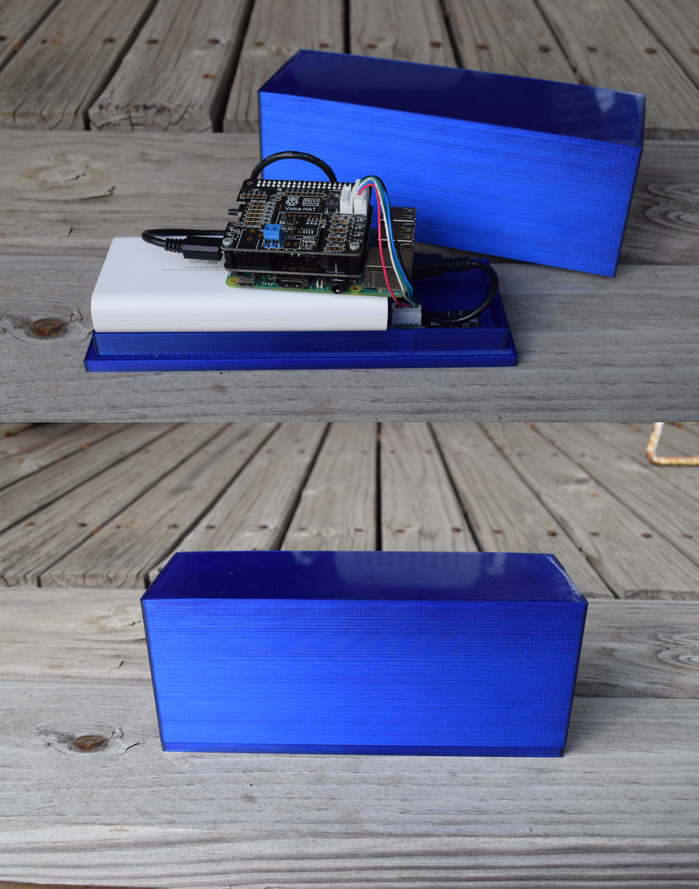

Description: This is a system I created as a sophomore to be able to identify frogs from audio recordings as a way to monitor the health of wetlands. The system, like many that I work on, had two main parts: a physical device to record clips of the wetland, and a program to analyze the clips to attempt to isolate and identify frog calls. As a part of building the recording device, I designed a case for the Raspberry Pi, microphone, and battery to keep them dry, and experimented with an attachment to power the Pi only when calls needed to be taken to improve battery life. The program was much more challenging, though, it was my first real experience with audio recording and analysis, and determining how to process the recording efficiently and match them against the many species of frogs is a problem I am not finished with. I did find it very interesting throughout my research and testing how widely applicable of a system this is, though I tested with frogs there are many possibilities.
Description: The purpose of this project was to create a system which could, by taking a photograph of the sky, locate the observer based on characteristics of the image taken. This system uses a combination of long exposure cameras to take photos of the night sky, and software to process these images and determine what latitude and longitude on Earth it believes these images came from. The goal was to have this system be as accurate as possible with affordable hardware, and to be able to work in imperfect conditions, both of which would greatly increase the practicality of this project in the real world. This project went through several iterations, such as testing different cameras' performance, taking photos in different conditions, as well as testing with different lenses and stands. The programming aspect of the system also underwent many iterations to allow it to function more accurately, efficiently, and reliably, and required significant learning about astronomy and trigonometry.